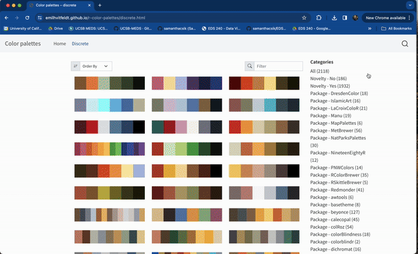

Check out the resources page on the course website for some additional books, videos, and articles on designing effective UIs.

Ensuring that your shiny apps are accessible can feel overwhelming – but considering even a few small changes can have a large impact on user experience.
The following suggestions have been borrowed and adapted from Ch. 6.3 - Web Accessibility from Engineering Production-Grade Shiny Apps, by Colin Fay, Sèbastien Rochette, Vincent Guyader, & Cervan Girard:
Use HTML elements appropriately (e.g. consider hierarchy)
Include alt text for graphical elements
Consider navigation from a mobility perspective
Use colorblind-friendly palettes
Image Source: Accessibility Stack
About 1 in 12 males and 1 in 200 females have some form of colorblindness (Wikipedia). Ensuring that your color choices are distinguishable from one another and / or providing an additional non-color-based way (e.g. patterns, shapes) of distinguishing between groups is critical.
There are lots of great colorblind-accessible palettes and resources (check out this one by Alex Phillips, as well as the {paletteer} package, a near comprehensive collection of all R color palette packages). Using the Let’s get color blind Google Chrome extension can help you quickly assess the accessibility of you visualizations / apps.

Using Google Chrome’s Let’s get color blind extension to simulate different types of color blindness